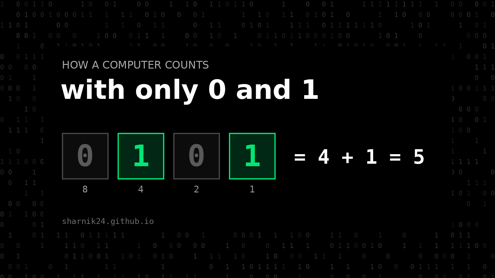

A computer, the machine that runs banks, airports, hospitals and the phone in your pocket, only understands two things: 0 and 1. Nothing else. No letters, no colours, no pictures. Just 0 and 1. Everything you see on a screen is built on top of this one simple idea. This article explains, step by step and in simple words, how that works.
Most of us never think about how we count. We just do it. But if you want to understand binary, you have to first understand your own counting system, because binary follows the exact same rules. Only one thing is different.
We use ten digits: 0, 1, 2, 3, 4, 5, 6, 7, 8 and 9. That's why our system is called decimal, from the Latin word for ten. Now think about what happens when you count past 9. You don't have an eleventh digit. So you do something clever without even noticing: you put a 1 in a new column on the left, and the right column goes back to 0. That's how 9 becomes 10.
And every column has a value. Take the number 352. The right column is the ones, the middle column is the tens, the left column is the hundreds. So 352 really means 3 hundreds, 5 tens and 2 ones. 300 + 50 + 2. Each column is worth ten times the column on its right: 1, 10, 100, 1000. We learned this in school as "place value", and then we forgot it because it became automatic. Keep this idea in your head, because binary works exactly like this.
Inside a computer chip there are billions of tiny switches called transistors. Each switch can only be in one of two states: off or on. There is no "a little bit on". It's either current flowing or not flowing. Off we call 0. On we call 1. Each of these 0-or-1 values is called a bit, which is short for "binary digit".
Now you might ask, why not build switches with ten levels so computers can use our normal decimal system? Actually, people tried. One of the famous early computers, ENIAC, built in the 1940s in America, worked in decimal. But it was huge, complicated and hard to keep reliable. The problem is simple: if a wire has to show ten different levels of electricity, a small disturbance can turn a 6 into a 7, and now your answer is wrong. But if the wire only has to show two states, off or on, it's very hard to confuse them. Two states are clean. Two states are reliable. That's why almost every computer built after that uses binary. It's not because binary is fancy. It's because it's the most reliable way to build a machine that never gets confused.
Here is the beautiful part. A computer counts using exactly the same rule we use. The only difference is that it runs out of digits much faster. We run out after 9. A computer runs out after 1. So it has to move to a new column much earlier.
Let's count slowly. 0. Then 1. Now we want to go one more, but there is no "2" in binary. So, same rule as us: put a 1 in a new column on the left, and the right column goes back to 0. That gives us 10. So in binary, 10 means two, not ten. Then 11 is three. Now both columns are full again, so we need a third column: 100 is four. And it keeps going like this.
| Normal | Binary | Normal | Binary |
|---|---|---|---|
| 0 | 0000 | 8 | 1000 |
| 1 | 0001 | 9 | 1001 |
| 2 | 0010 | 10 | 1010 |
| 3 | 0011 | 11 | 1011 |
| 4 | 0100 | 12 | 1100 |
| 5 | 0101 | 13 | 1101 |
| 6 | 0110 | 14 | 1110 |
| 7 | 0111 | 15 | 1111 |
I wrote them with four digits so you can see the pattern clearly. Look at the right column: it goes 0, 1, 0, 1, 0, 1, switching every single time. The next column switches every two numbers. The next one every four. The left one every eight. Once you see this pattern, you can't unsee it. It's like a car's odometer, but with only 0 and 1 on each wheel.
Remember how in decimal each column is worth ten times the one on its right? In binary, each column is worth two times the one on its right. So from right to left, the column values are:
1, 2, 4, 8, 16, 32, 64, 128
That's all you need to remember. Now, to read a binary number, you just look at which columns are on (1), and add up their values. Ignore the columns that are off (0).
Let's take 101. Right column, value 1: it's on, so take 1. Middle column, value 2: it's off, so take nothing. Left column, value 4: it's on, so take 4. Now add: 4 + 0 + 1 = 5. So 101 in binary is 5.
One more: 1011. From right to left the values are 1, 2, 4, 8. The 1 is on, the 2 is on, the 4 is off, the 8 is on. So 8 + 0 + 2 + 1 = 11.
Try this one yourself before reading the answer: 110. The 4 is on, the 2 is on, the 1 is off. 4 + 2 = 6. If you got it, you can now read binary. That's the whole skill. After two or three examples, your brain starts doing it automatically.
Reading binary is one thing. But how do you turn a normal number into binary? There is a simple method: keep dividing by 2 and write down the remainder each time. Let's do 13.
13 divided by 2 is 6, remainder 1.
6 divided by 2 is 3, remainder 0.
3 divided by 2 is 1, remainder 1.
1 divided by 2 is 0, remainder 1.
Now read the remainders from bottom to top: 1101. That's 13 in binary. Let's check it with our column trick: 8 + 4 + 0 + 1 = 13. Correct.
Adding in binary follows the same rules as normal adding, with "carrying". The only thing to remember is that in binary, 1 + 1 = 10. Because 1 + 1 is two, and two in binary is written 10. So you write 0 and carry 1 to the next column, exactly like when you do 5 + 5 = 10 in normal maths.
Let's add 5 and 3. In binary, 5 is 0101 and 3 is 0011. Start from the right: 1 + 1 = 10, write 0, carry 1. Next column: 0 + 1 + the carried 1 = 10, write 0, carry 1. Next: 1 + 0 + the carried 1 = 10, write 0, carry 1. Last: 0 + 0 + the carried 1 = 1. Answer: 1000. And 1000 in binary is 8. And 5 + 3 is 8. The computer just did maths using nothing but switches. Every calculation your phone does, from a calculator to a game, comes down to this, done billions of times per second.
Binary was not invented for computers. In 1703, a German mathematician called Gottfried Wilhelm Leibniz published a paper about a number system that used only 0 and 1. There were no computers then. No electricity in homes. He was simply fascinated by the idea that every number could be written with just two symbols. He even noticed that an ancient Chinese book, the I Ching, used patterns of broken and unbroken lines that matched his binary numbers.
Then, in 1854, an English mathematician named George Boole wrote about a kind of logic that works with only two values: true and false. Today we call it Boolean logic. And in 1937, a young American student called Claude Shannon wrote his master's thesis showing that electrical switches could be used to do Boole's logic. That one idea connected everything: Leibniz's 0 and 1, Boole's true and false, and real electrical switches. That is the foundation every computer stands on today.
One bit alone can't do much. It can only say yes or no, on or off. So computers group bits together. Eight bits together are called a byte. With 8 bits, the smallest number you can make is 00000000, which is 0. The biggest is 11111111. Add up all the column values: 128 + 64 + 32 + 16 + 8 + 4 + 2 + 1 = 255. So one byte can hold any number from 0 to 255. That's 256 different values in total.
And once you know this, you start seeing 255 everywhere. Every colour on your screen is made of three numbers: red, green and blue, and each one goes from 0 to 255, because each one is stored in one byte. That's why your screen can show 256 × 256 × 256, which is about 16.7 million colours. Your home internet address, like 192.168.1.1, is made of four numbers, and none of them can go above 255. Same reason: each part is one byte.
When you hear kilobyte, megabyte and gigabyte, it's just more and more bytes. A kilobyte is around a thousand bytes, a megabyte is around a million, and a gigabyte is around a billion. So a 4 GB movie on your phone is roughly 32 billion tiny switches, each one either on or off.
Everything on your computer is stored this way. Your photos, your music, your WhatsApp messages, your bank balance, and this page you are reading right now. All of it, at the very bottom, is just 0s and 1s. Billions of switches turning on and off, very, very fast. There is no magic inside. There is only a very simple idea, repeated an unbelievable number of times.
At the bottom, a computer is just switches and adding. Once that is clear, everything built on top of it becomes much easier to understand.